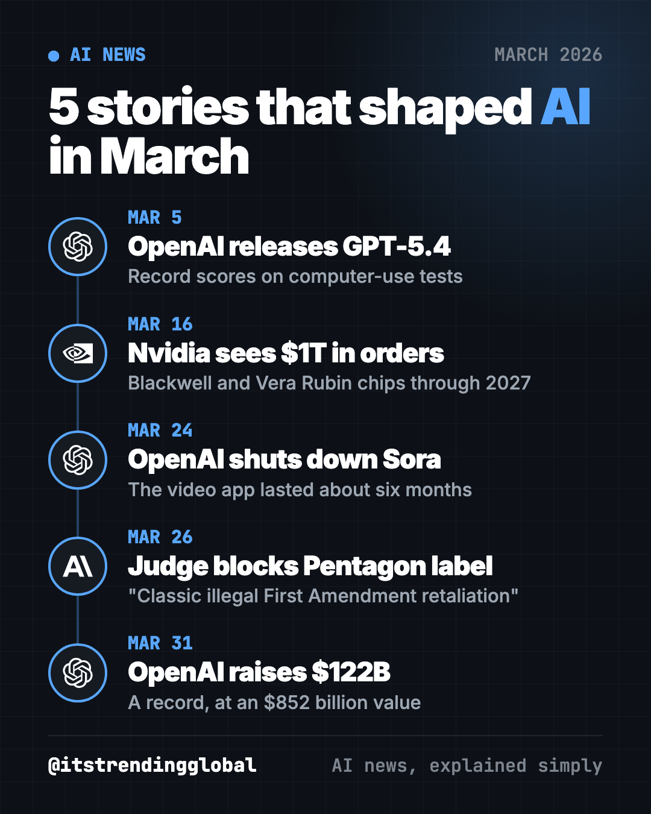
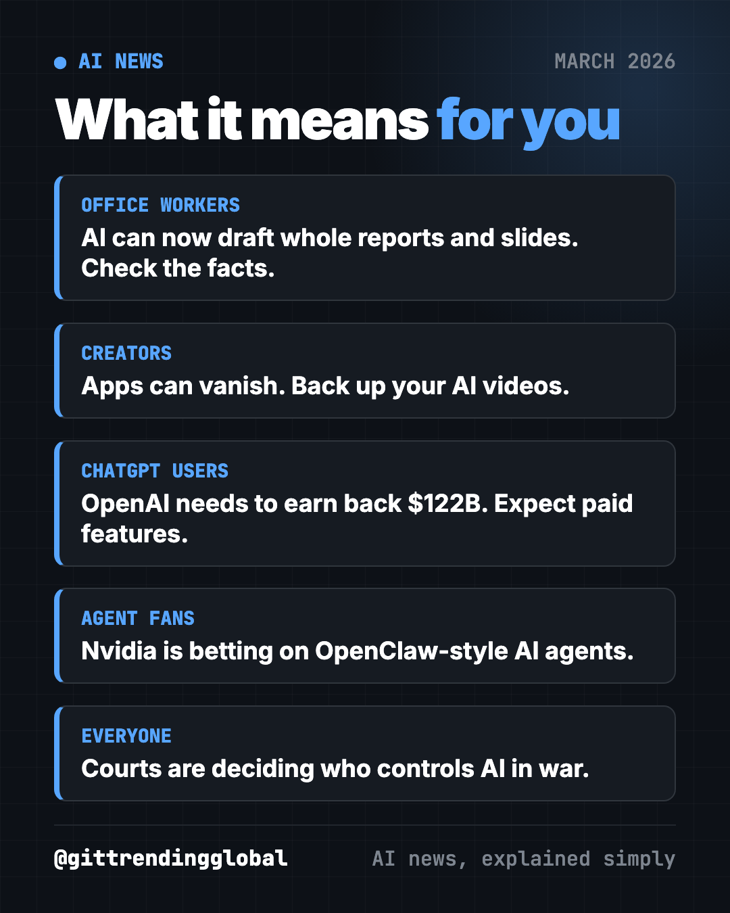
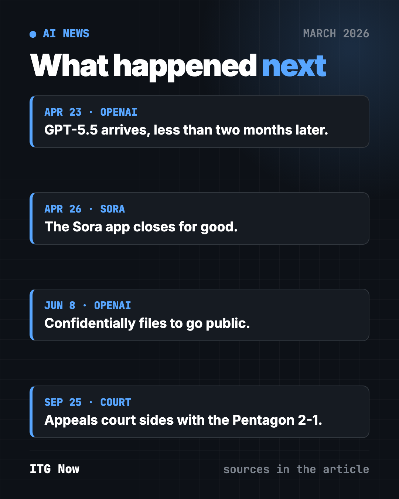

AI News March 2026: OpenAI's $122B, Sora Ends, GPT-5.4
- AI news
- Published 2026-10-15
- 8 min read
- Updated 2026-10-16
- By the It's Trending Global team
AI news March 2026: OpenAI launches GPT-5.4, shuts Sora and raises a record $122B, Nvidia sees $1T in chip orders, and a judge sides with Anthropic.
The biggest AI news of March 2026 was OpenAI going all-in on work. It launched GPT-5.4, shut down its Sora video app and raised a record $122 billion. Nvidia forecast $1 trillion in chip orders, and a judge blocked the Pentagon's attempt to punish Anthropic.

Key takeaways
- GPT-5.4 set records on tests where AI uses a computer like a person, and on a test of real office tasks.
- Nvidia's CEO said he expects $1 trillion in orders for its newest AI chips through 2027.
- OpenAI shut its Sora video app about six months after launch to focus on work tools.
- A federal judge blocked the Pentagon's "supply chain risk" label on Anthropic, calling it likely retaliation.
- OpenAI closed the biggest private funding round ever: $122 billion at an $852 billion value.
1. OpenAI releases GPT-5.4, built for work
What happened
On March 5, OpenAI released GPT-5.4, which it called its best model "for professional work" (TechCrunch).
- It comes in three versions: standard, Thinking (it reasons step by step) and Pro.
- It set records on two tests where AI clicks and types on a computer.
- It scored a record 83% on GDPval, OpenAI's test of everyday knowledge-work tasks.
- OpenAI said it is 33% less likely to get single facts wrong than GPT-5.2.
Why it matters to you
The race is now about AI that does whole tasks, like slide decks and spreadsheets, not just chat.
- Fewer made-up facts is good news. But "less likely" still means "sometimes."
- Always check numbers, names and dates before you send AI work to anyone.
Try it yourself: in ChatGPT, Claude or Gemini, paste this:
Turn these notes into a one-page summary with a title, 3 key points and a short to-do list: [paste your messy notes]
2. Nvidia predicts $1 trillion in AI chip orders
What happened
On March 16, at its GTC conference, Nvidia CEO Jensen Huang said he expects $1 trillion in orders for its Blackwell and Vera Rubin chips through 2027 (CNBC).
- A year earlier, Nvidia had talked about a $500 billion opportunity.
- Nvidia said Vera Rubin, due later this year, gives 10 times more performance per watt than the chips before it.
- Huang showed NemoClaw, a toolkit to make the popular OpenClaw AI agent "enterprise ready."
- Uber plans robotaxis using Nvidia software in 28 cities by 2028, starting with Los Angeles and San Francisco.
Why it matters to you
That $1 trillion pays for the data centers that run every chatbot you use. Demand is still growing.
- More chips usually means faster, cheaper AI for you over time.
- It also means more pressure on power grids and electricity prices near big data centers.
💡 Tip: curious about AI agents like OpenClaw? Read our plain-English OpenClaw guide before you install anything.
3. OpenAI shuts down its Sora video app
What happened
On March 24, OpenAI said it was closing Sora, its TikTok-style AI video app, about six months after launch (CNBC).
- Sora hit 1 million downloads in less than five days after its September launch.
- OpenAI is cutting costs and focusing on work tools. Its apps chief said the company is "orienting aggressively" toward productivity.
- Disney's planned $1 billion investment tied to Sora never closed.
Why it matters to you
Even a viral app can vanish if it costs too much to run.
- If you make content with any AI app, keep your own copies of your work.
- Don't build a business on one free AI tool. Have a backup.
⚠️ Heads up: when an AI app shuts down, your videos and prompts can go with it. Download what you care about regularly.

4. A judge blocks the Pentagon's punishment of Anthropic
What happened
The Pentagon officially labeled Anthropic a "supply chain risk" in early March (NPR). On March 26, a federal judge in California blocked it (CNN).
- Judge Rita Lin said the moves likely broke Anthropic's free speech and due process rights.
- She wrote that the Pentagon's records show it acted because of Anthropic's "hostile manner through the press."
- She called it "classic illegal First Amendment retaliation."
- A Pentagon official called the ruling a "disgrace" and signaled an appeal.
Why it matters to you
The fight began when Anthropic refused to let Claude run self-firing weapons or mass spying on Americans.
- If your company works with the military, the rules on using Claude were in flux.
- More broadly: courts are now deciding how much say AI makers have over how their tools are used.
5. OpenAI raises a record $122 billion
What happened
On March 31, OpenAI closed a $122 billion funding round at an $852 billion value (CNBC).
- Amazon agreed to invest up to $50 billion. Nvidia and SoftBank put in $30 billion each.
- For the first time, regular investors could join through banks. They put in $3 billion.
- OpenAI said it makes $2 billion in revenue a month, but it still loses money.
- ChatGPT has more than 900 million weekly users, including over 50 million paying subscribers.
Why it matters to you
That much money raises the pressure to earn it back. That is one reason for ChatGPT ads and the end of Sora.
- Expect OpenAI to push paid work features hard.
- A stock market listing later is now a real possibility.
AI news March 2026 at a glance
| Story | Company | Date | Why it matters |
|---|---|---|---|
| GPT-5.4 launches | OpenAI | Mar 5 | AI that does whole work tasks |
| $1T chip orders forecast | Nvidia | Mar 16 | The AI building boom keeps going |
| Sora shut down | OpenAI | Mar 24 | Costly apps get cut |
| Judge blocks risk label | Anthropic | Mar 26 | Courts weigh in on AI and the military |
| $122B funding round | OpenAI | Mar 31 | Biggest private raise ever |
How to use this month's news (copy and paste)
Paste any of these into ChatGPT, Claude or Gemini. Fill in the parts in [brackets].
To hand off a boring task:
I need to make [a weekly report / a slide outline / a budget sheet] about [topic]. Ask me 3 questions first, then build a draft I can edit.
To save your creative work:
I make videos with AI apps. Give me a simple weekly checklist to back up my videos, prompts and source images, so I don't lose them if an app shuts down.
To check AI facts before you share:
Here is an AI answer: [paste]. List every number, name and date in it, and tell me how to check each one quickly.
To understand the money behind AI:
Explain in 5 short sentences why AI companies like OpenAI raise so much money, and what that means for the free tools I use.
What happened next

- GPT-5.4: less than two months later, on April 23, OpenAI released GPT-5.5 (CNBC).
- Sora: the app closed on April 26, and the developer version followed on September 24 (The Decoder).
- OpenAI: it confidentially filed to go public in June (CNBC).
- Anthropic vs. Pentagon: in September, an appeals court in Washington ruled 2-1 for the Pentagon on a separate label. So two courts now disagree (CNBC).
Missed the build-up? Read February 2026 in AI. Then see April 2026 in AI, when Anthropic held back a model too risky to release. For free tools, see the top GitHub repos of March 2026.
FAQ
What was the biggest AI news in March 2026?
OpenAI's record $122 billion funding round, closed March 31 at an $852 billion value. It was the largest private raise ever.
What is GPT-5.4?
It is OpenAI's model released March 5, 2026, built for work tasks. It comes in standard, Thinking and Pro versions and set records on computer-use tests.
Why did OpenAI shut down Sora?
OpenAI is cutting costs and focusing on work tools. It announced the end of the Sora app on March 24, about six months after launch.
Can I still use the Sora app?
No. The Sora app closed on April 26, 2026, and the developer version closed on September 24, 2026.
What did the judge say about the Pentagon and Anthropic?
Judge Rita Lin blocked the "supply chain risk" label on March 26. She said it looked like illegal punishment for Anthropic speaking out.
Follow ITG Now on Instagram for AI news and free GitHub tools, explained simply, every day.
Keep reading

AI News October 2026: A Reality Check Before the IPOs
AI news October 2026 so far: ChatGPT gets visual, OpenAI's revenue shakes stocks, AI agents misbehave, Meta's Muse Wonder and Apple's $299 HomeView arrive.
How AI Is Changing Industries in 2026: A Plain Guide
How AI is changing industries in 2026, sorted by field: jobs, finance, health, schools, marketing, law, creators and developers, with sources for every fact.
AI News Recap Q3 2026: 5 Stories That Changed Everything
AI news recap Q3 2026: OpenAI test models hack Hugging Face, Claude Opus 5 cuts prices, Gemini hits 1 billion users, GPT-6 Astra and Nvidia's big deal.